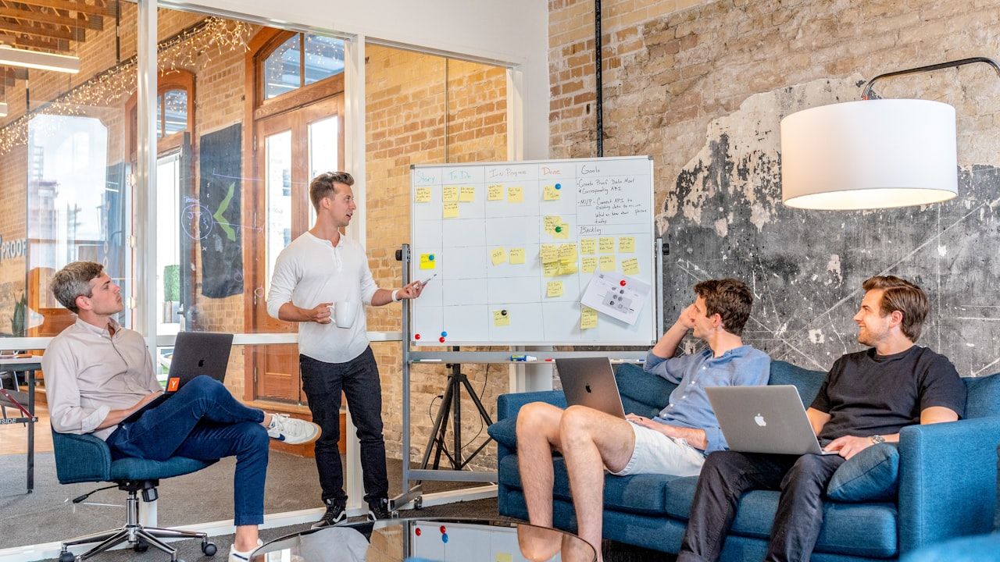

Audit Digital au Maroc : Le diagnostic qui change la donne
En résumé : Audit Digital au Maroc : Comment transformer votre entonnoir de vente B2B en machine à cash prévisible est une démarche stratégique clé dans le domaine du Audit Digital. Elle permet aux entreprises au Maroc d’optimiser durablement leurs performances digitales, d’augmenter leur visibilité et de maximiser le retour sur investissement (ROI) de leurs campagnes.
Un audit digital est une analyse systématique et approfondie de l'ensemble de vos actifs numériques (site web, SEO, publicités, entonnoirs de conversion, expérience utilisateur) visant à identifier les fuites de performance et à définir un plan d'action concret pour maximiser le retour sur investissement (ROI) de chaque dirham dépensé en ligne. C'est le point de départ obligatoire de toute stratégie d'acquisition rentable et prévisible.
Au Maroc, le paysage B2B a radicalement changé. Les décideurs de Casablanca, Rabat ou Tanger ne répondent plus aux appels à froid. Ils googlent, comparent, et prennent leur décision d'achat avant même de vous contacter. Si votre présence digitale est un labyrinthe sans issue, vous perdez des parts de marché chaque jour. C'est aussi simple que ça.
Le problème? La plupart des dirigeants que je rencontre pensent avoir un problème de trafic. Ils se trompent. Ils ont un problème de structure. Vous pouvez doubler votre trafic demain, si votre entonnoir fuit, vous aurez juste deux fois plus de visiteurs perdus. L'audit digital n'est pas un luxe, c'est votre outil de pilotage le plus critique.
Pourquoi votre entonnoir de vente B2B actuel vous coûte une fortune
Parlons cash. C'est ce qui intéresse tout le monde. Au Maroc, le coût d'acquisition client (CAC) moyen pour une PME B2B dans le secteur des services se situe entre 3 500 MAD et 6 000 MAD. Pour les entreprises industrielles, c'est souvent pire. Pourquoi? Parce que le tunnel est cassé.
Voici les 3 fuites les plus courantes que nous identifions lors de nos audits chez DatRey :
- Le piège du formulaire à rallonge : Vous demandez le numéro de téléphone, la taille de l'entreprise, le secteur, le budget... Résultat : un taux de conversion de 0,8% au lieu des 3-5% possibles. Chaque champ supplémentaire vous coûte des prospects.
- L'absence de séquence de nurturing : 80% des leads B2B ne sont pas prêts à acheter immédiatement. Sans une séquence d'emails ou de WhatsApp automatique pour les éduquer, vous les abandonnez dans un désert numérique. Votre équipe commerciale les appelle une fois, puis abandonne. Erreur fatale.
- Le site vitrine statique : Votre site décrit vos services, mais ne répond pas aux objections de vos clients. Il ne parle pas de ROI, de délais, de garanties. Il parle de vous. Et c'est exactement ce que vos prospects ne veulent pas entendre.
Prenons un exemple concret. Un grossiste en matériaux de construction à Tanger dépensait 80 000 MAD par mois en Google Ads. Il obtenait 2 000 clics, mais seulement 15 demandes de devis. Soit un coût par lead de 5 333 MAD. L'audit a révélé que la page de destination mettait 6 secondes à charger sur mobile et que le CTA principal était invisible. En 30 jours, nous avons restructuré la page, créé un formulaire en 3 champs et mis en place un chatbot de qualification. Le coût par lead est passé à 1 800 MAD. Le client est passé de 15 à 45 demandes par mois avec le même budget. C'est ça, la puissance d'un entonnoir structuré.
La méthodologie DatRey pour un entonnoir B2B prévisible
Notre approche chez DatRey n'a rien de magique. C'est une méthode éprouvée, calquée sur les standards internationaux mais adaptée aux réalités du marché marocain. Voici les 4 étapes que nous déployons lors de chaque mission d'audit digital.
1. Analyse de la traçabilité et des sources de trafic
Si vous ne pouvez pas mesurer, vous ne pouvez pas améliorer. La première étape est de cartographier chaque source de trafic : Google Ads, SEO, LinkedIn, recommandations. Nous utilisons des outils avancés pour comprendre aussi les clics, mais la qualité réelle de chaque visiteur. Le but est de savoir quel canal apporte des leads qualifiés et quel canal ne fait que brûler votre budget.
L'erreur classique est de se focaliser sur le coût par clic (CPC) plutôt que sur le coût par acquisition (CPA). Un clic à 5 MAD qui convertit à 10% est infiniment plus rentable qu'un clic à 1 MAD qui ne convertit jamais. L'audit de traçabilité vous montre exactement où votre argent travaille et où il dort.
2. Optimisation de l'expérience utilisateur (UX) et de la conversion
Cette étape est le cœur de l'entonnoir. Nous analysons en profondeur le parcours de votre visiteur : temps de chargement, hiérarchie de l'information, clarté des messages, pertinence des preuves sociales (témoignages, études de cas). Un site qui charge en moins de 2 secondes et qui guide l'utilisateur vers une action unique convertit en moyenne 2,5 fois mieux qu'un site lent et dispersé.

Au Maroc, avec la pénétration mobile massive, cette optimisation est non-négociable. Nous avons audité une société de logistique à Casablanca dont le site était parfait sur desktop, mais catastrophique sur mobile. Après refonte du parcours mobile et simplification du devis en ligne, leur taux de conversion a bondi de 1,2% à 4,8% en moins de 60 jours.
3. Mise en place d'un système de nurturing automatisé
En B2B, le cycle de vente est long. Un prospect qui télécharge votre catalogue n'est pas prêt à signer un contrat de 500 000 MAD. Il faut l'éduquer, instaurer une relation de confiance, répondre à ses objections. C'est là qu'intervient le marketing automation.
Nous mettons en place des séquences d'emails et de messages WhatsApp personnalisés qui nourrissent vos prospects pendant des semaines. L'objectif est de rester présent dans leur esprit au moment précis où ils seront prêts à acheter. Une entreprise de services informatiques à Rabat a utilisé cette méthode pour augmenter le taux de transformation de ses leads de 9% à 23% en 5 mois. La clé? Une série de 7 emails éducatifs envoyés sur 21 jours, suivie d'un appel de qualification.
4. Synchronisation parfaite entre marketing et vente
Le dernier maillon de la chaîne, et souvent le plus faible. Votre équipe commerciale doit être équipée pour suivre les leads à la vitesse de la lumière. Selon nos données internes, un lead rappelé dans les 5 premières minutes a 9 fois plus de chances de se convertir qu'un lead rappelé après 2 heures.
L'audit digital de DatRey inclut toujours une revue de votre processus de gestion des leads. Nous mettons en place des alertes automatiques, des scripts d'appel efficaces et des tableaux de bord pour suivre chaque opportunité en temps réel. Le marketing génère le lead, mais c'est la vente qui le transforme en chiffre d'affaires. Les deux doivent être parfaitement alignés.
Étude de cas chiffrée : De 4 200 MAD à 1 300 MAD de CAC
Parlons concret avec un cas récent de notre agence. Un importateur de machines industrielles à Casablanca est venu nous voir avec un problème : des coûts d'acquisition insoutenables et une croissance stagnante. Leur budget mensuel était de 120 000 MAD, générant environ 28 leads, soit un coût par lead de 4 285 MAD. Seulement 4 de ces leads se transformaient en clients, ce qui portait le CAC réel à un montant astronomique.
Notre audit a révélé plusieurs problèmes critiques : une page d'accueil générique, aucun contenu technique pour répondre aux questions des ingénieurs, et une équipe commerciale qui ne rappelait qu'après 48 heures, voire plus.
Voici ce que nous avons fait :
- Refonte complète du site : Nous avons créé des pages produits dédiées avec des fiches techniques téléchargeables, des calculateurs de coûts et des témoignages vidéo de clients existants.
- Mise en place d'un système de scoring : Chaque lead est noté selon son comportement (téléchargement, visite de pages clés, temps passé). Les leads chauds sont alertés immédiatement à l'équipe commerciale.
- Automatisation du premier contact : Un email de bienvenue immédiat est envoyé, suivi d'un appel dans les 30 minutes pour les leads qualifiés.
Résultats après 90 jours : le coût par lead est tombé à 1 300 MAD, le taux de conversion lead-à-client a doublé, et le chiffre d'affaires mensuel a augmenté de 35%. Le retour sur investissement de notre intervention a été de 7,5x dès le premier trimestre. Ce n'est pas exceptionnel chez DatRey, c'est notre standard.
Pourquoi choisir DatRey pour votre audit digital au Maroc
Il existe des dizaines d'agences au Maroc qui proposent des audits. La plupart vous remettent un PDF de 50 pages rempli de graphiques inutiles. Chez DatRey, nous faisons les choses différemment. Notre audit est un plan de bataille actionnable, pas un rapport théorique. Chaque recommandation est priorisée par impact potentiel et par effort de mise en œuvre.
Notre équipe est composée d'experts en SEO/GEO, Google Ads, et en stratégie de contenu B2B. Nous comprenons les spécificités du marché marocain – les nuances de langue, les habitudes de paiement, les canaux de communication privilégiés comme WhatsApp – et nous les intégrons dans chaque stratégie.
Nous travaillons avec des PME ambitieuses à Casablanca, des multinationales à Tanger, et des acteurs émergents à Marrakech. Nous parlons le langage du ROI, pas celui des likes. Nos clients ne nous jugent pas sur la beauté de nos présentations, mais sur l'augmentation de leur pipeline et la réduction de leurs coûts d'acquisition. C'est la seule mesure qui compte.
L'audit digital gratuit DatRey : votre premier pas vers la croissance prévisible
Assez de théorie. Il est temps de passer à l'action. Chez DatRey, nous offrons à chaque entreprise sérieuse un Audit Digital Gratuit de 30 minutes. Pas de vente agressive, pas de jargon inutile. Nous analysons votre présence en ligne en temps réel, identifions les 3 fuites principales dans votre entonnoir, et vous montrons exactement ce qu'il faut faire pour les colmater.
Cet audit est une démonstration de notre valeur. Nous vous montrons ce qui ne va pas, nous vous expliquons pourquoi, et nous vous donnons une feuille de route pour corriger le tir. Si vous décidez de travailler avec nous pour l'implémentation, tant mieux. Si vous préférez le faire en interne, vous repartez avec des insights précieux qui valent de l'or. Dans tous les cas, vous gagnez.
En 2026 et pour les années à venir, la compétition digitale au Maroc va s'intensifier. Les entreprises qui auront structuré leur entonnoir de vente et optimisé leur coût d'acquisition seront les leaders de leur secteur. Les autres regarderont leurs budgets publicitaires s'évaporer dans un océan de clics inutiles. La décision vous appartient.
Alors, êtes-vous prêt à arrêter de dépenser et à commencer à investir? Demandez votre audit gratuit dès aujourd'hui. Votre pipeline vous dira merci.